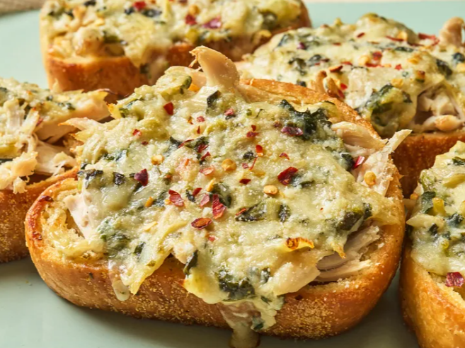

ingredient spinach

This 4-ingredient spinach artichoke chicken Texas toast dinner is incredibly easy to make. Cooked chicken and spinach artichoke dip spread on baked Texas toast take minutes to assemble and less than a half hour to bake.
- 8 slices frozen Texas toast
- 1 1/2 cups prepared spinach artichoke dip
- 2 cups shredded cooked chicken
- Preheat the oven to 425 degrees F (220 degrees C). Place toast on a parchment paper lined baking sheet.
- Flip each piece of toast; use a spoon to press the center of each piece down to form a well inside the crust.
Home